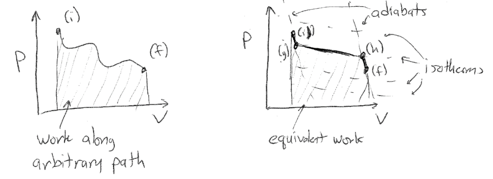
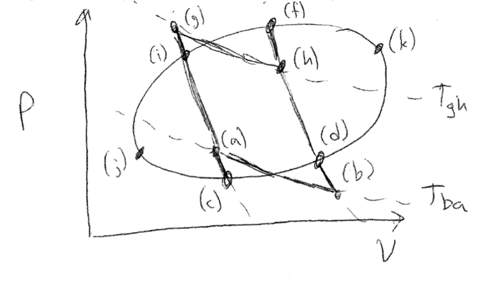
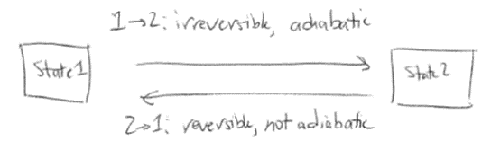

The fundamental relation of thermodynamics#
Recommended textbooks#
Tester and Modell, Example 4.3, Ch 4.5-4.7, 5.1, 5.2
Topics in this lecture#
Entropy
Second Law of Thermodynamics
The Fundamental Relation
Announcements#
Simulation project due Thursday via online submission
Theorem of Clausius#
In the last lecture, we derived a relationship for the efficiency of a reversible heat engine using the Carnot cycle, finding that:
Here, \(T_A\) is the temperature of the “hot system” to which the engine is connected and \(T_B\) is the temperature of the “cold system.” We can utilize this relation to then write:
This relation again shows how the differential change in heat for a reversible heat engine is related to the temperatures of two connected systems. We next generalized the idea of the Carnot cycle to any arbitrary set of expansions and compressions that the change the state of a system from state (i) to state (f) via some unspecified path that may involve a series of different events (e.g. adiabatic expansions/compressions, isothermal compressions/expansions, etc.) as in the Carnot cycle. We represent this path on a state diagram in the \(P-\underline{V}\) space.
{width=”100%”}
Alternatively, we could write a path between these two same states by only performing adiabatic or isothermal processes - doing so would require us to reach intermediate states (g) and (h) as the states on the adiabatic paths that are connected by an isothermal path. In this way, we define a connected series of adiabatic and isothermal processes which reaches the same state (f) as in the original process. We can then choose (g) and (h) such that the work along the new path is equivalent to the work along the equivalent path. Since the change in energy between (i) and (f) is independent of the path chosen (according to the First Law of Thermodynamics), we then get that:
The last expression follows from the fact that \(\delta Q_{ig} = \delta Q_{hf} = 0\) by construction along the adiabatic paths. Together then, we see that we can decompose an arbitrary path into a series of isothermal and adiabatic paths and use this to deduce a relationship for the heat transfer between the two states along a specific isothermal path. This finding is generalized as the Theroem of Clausius: Given any reversible process in which the temperature changes in any prescribed manner, it is always possible to find a reversible “zigzag” process consisting of adiabatic-isothermal-adiabatic steps such that the heat interaction in the isothermal step is equal to the heat interaction in the original process.
Entropy#
Using the Theorem of Clausius, we can now analyze an arbitrary reversible, cyclic process carried out by a reversible heat engine. Consider the path given by the curve \(jifkdc\) through \(P-V\) space. We will look at a portion of the path given by a transition from state (i) to (f) as above. We will again draw adiabatic paths through (i) and (f), and define the states where they intersect the complete cycle as states (c) and (d). From the Theroem of Clausius, we can break down the curves \(i-f\) and \(c-d\) into a series of isothermal and adiabatic paths. Specifically, we define:
(i) \(\rightarrow\) (g): adiabatic compression
(g) \(\rightarrow\) (h): isothermal expansion at temperature \(T_{gh}\)
(h) \(\rightarrow\) (f): adiabatic compression
\(\therefore \delta Q_{if} = \delta Q_{gh}\) by Theorem of Clausius
(d) \(\rightarrow\) (b): adiabatic expansion
(b) \(\rightarrow\) (a): isothermal compression at temperature \(T_{ba}\)
(a) \(\rightarrow\) (c): adiabatic compression
\(\therefore \delta Q_{dc} = \delta Q_{ba}\) by Theorem of Clausius
The hot temperature along the isothermal path (g) \(\rightarrow\) (h) is defined as \(T_{gh}\) and the cold temperature along the isothermal path (b) \(\rightarrow\) (a) is defined as \(T_{ba}\).
{width=”70%”}
We now have an inner cycle \(ighfdbaci\) that involves transfers of heat at prescribed temperatures. We can further recognize that the cycle given by \(ifdc\) reduces to a Carnot cycle after applying the Theorem of Clausius:
(i) \(\rightarrow\) (g) + (g) \(\rightarrow\) (h) + (h) \(\rightarrow\) (f): equivalent work and heat interactions as an isothermal expansion from (i) \(\rightarrow\) (f) at temperature \(T_{gh}\)
(f) \(\rightarrow\) (d): adiabatic expansion
(d) \(\rightarrow\) (b) + (b) \(\rightarrow\) (a) + (a) \(\rightarrow\) (c): equivalent work and heat interactions as an isothermal compression at temperature \(T_{ba}\)
(c) \(\rightarrow\) (i): adiabatic compression
The combination of these paths thus yields the same net result as a Carnot cycle, with heat transfers \(\delta Q_{if}\) and \(\delta Q_{dc}\) corresponding to the heat transferred along the isothermal paths \(gh\) and \(ba\) respectively. Using the previous relationship for the efficiency of a heat engine performing a Carnot cycle, we can then write:
Using this same conceptual approach, we can divide the entire cycle into an infinite number of infinitesimal paths, generalizing [eq2.38]{reference-type=”ref” reference=”eq2.38”}:
This expression says that along a closed, reversible path, the closed path integral of the infinitesimal heat transferred divided by \(T\) is 0. Importantly, \(T\) itself is changing for each portion of the path, but for each portion of the path the heat interaction can be considered as isothermal due to the Theorem of Clausius. By arbitrarily dividing the entire cyclic process into two paths between states (j) and (k) we can also write:
We can thus divide the path between any two arbitrary points and the integral of this differential quantity is conserved. In other words, I can draw any arbitrary reversible cyclic process, divide it into two reversible paths connecting any two states, and we rigorously require that the integral relationship above holds. Therefore, the value of the integral is a derived parameter that must be a state function since it does not depend on the exact path that I specify (as long as the path is reversible), like the internal energy. We define this quantity as the entropy:
Here, the temperature always refers to the temperature at which heat is transferred which may vary during a process. We have written the entropy in intensive form since we’ve been writing all heat interactions in this form, but of course the entropy can also be extensive. With this new expression, we will now be able to further consider the limits of possible processes in terms of the entropy.
Unlike the energy, there is no requirement based on the postulates that the entropy must be conserved; instead, the entropy change is used to evaluate if a process is reversible or irreversible, as the relationships derived above are valid only for a reversible process. However, we need a means of computing the entropy change since this is a derived property (like the energy) that cannot be directly measured. From the First Law of Thermodynamics, we have for a closed system:
Combining with the expression for the reversible change in entropy and assuming a simple system with only \(P-\underline{V}\) work, we can write:
For a reversible path, then, we have that:
This expression provides a means of calculating an entropy change in a system for a reversible process. As an example, let’s consider applying this last relation to a monatomic ideal gas to derive an expression for the entropy. For a monatomic ideal gas we have the following known relations:
Here, \(R=N_A k_B\) is the ideal gas constant and \(N_A\) is Avogadro’s number, and note that we write extensive quantities (chosen arbitrarily). We can calculate the change in entropy of the gas as it undergoes a reversible process between arbitrary states (1) and (2):
We can compare this entropy change with the expression for entropy from statistical mechanics for an ideal gas, recalling that the degeneracy of the ideal gas is given as (ignoring prefactors that cancel out when taking differences):
So from statistical mechanics, we calculate a change in entropy that agrees with the thermodynamic expression. Since the statistical mechanics derivation effectively involves counting microstates, it agrees with the idea that entropy is a state function as derived from thermodynamics (which has no knowledge of microscopic system details).
Second Law of Thermodynamics#
We have now derived an expression for the entropy change along a reversible path. Let us remind ourselves of a few key points regarding reversible and irreversible processes. First, between any two equilibrium states of a system, we can define many possible paths (or processes) that connect those two states. Regardless of the path chosen, the change in energy and the change in entropy between the two states is the same - both the energy and entropy are state functions. However, the work and heat interactions along different paths will not be the same - work and heat are not state functions. Some paths will be reversible, indicating that all states along this path are equilibrium states and the system and its surroundings can be returned to the same conditions by following another reversible process (or the same process in reverse). The change in entropy of a process is defined as the integral of \(dQ/T\) along this reversible path.
Now, what can we do with this entropy change now that we have a means to calculate it? Let us consider an adiabatic process between states (1) and (2) in a closed system, in which work and heat interactions occur with the surrounding environment. We will show that the entropy change of such a process must be equal to or greater than zero. First, we can consider an adiabatic, reversible process. Since the process is reversible, the change in entropy is given by:
{width=”70%”}
The entropy change is zero since the process is adiabatic so that \(dQ = 0\). Now, let us instead assume the adiabatic process from state (1) to (2) is irreversible. We can construct a reversible process that returns the system from state (2) to state (1), but is not adiabatic. Following the Theorem of Clausius, for this second reversible process we can assume that all heat transferred between the system and its surroundings occurs during an isothermal process at some temperature. The two processes together are cyclic and returns the system back to its original state (although not the surroundings, since the first process is irreversible). For this combination of processes we can now write the following relations for energy and entropy changes of the system:
We now have an expression for the heat transferred from the system to the environment during the reversible process from state (2) to state (1) in terms of the work transferred during the first two processes. Next, we can invoke the Theorem of Clausius and the resulting expression for the entropy change during a reversible process to write:
Now we can consider the sign of \(\delta Q_{2\rightarrow 1}\), which cannot be equal to 0 or the reversible process would also be adiabatic (violating our assumptions and requiring that the first process also be adiabatic since the entropy is a state function). If \(\delta Q_{2\rightarrow 1} > 0\), then \(\delta W_{1\rightarrow 2} + \delta W_{2\rightarrow 1} < 0\) - indicating that all of the heat that is transferred along the non-adiabatic path is extracted as work in the environment. This process is exactly the same as Case 4 discussed previously and is impossible. Therefore, \(\delta Q_{2\rightarrow 1} < 0\), meaning \(\Delta {S}_{1\rightarrow 2} > 0\). In other words, the entropy change of a closed system during an irreversible, adiabatic process is always positive. We could then generalize this derivation to non-adiabatic processes to determine that the entropy change of any irreversible process is greater than the entropy change for a reversible process between the same two states.
This finding - that the entropy change is always zero for reversible adiabatic processes and positive for irreversible adiabatic processes in a closed system - is our statement of the Second Law of Thermodynamics. The universe is an isolated system that is at constant energy, and thus the universe only undergoes adiabatic processes. We can thus write for any given process occurring within the universe (which we can treat as a composite system that can be divided into subsystems including a system of interest and its surroundings):
These relations are a manifestation of the Second Law - specifically, the entropy of the universe increases in all naturally occurring processes. This last expression generalizes our finding that the entropy change for an irreversible process is greater than the entropy change for a reversible process to processes that are not adiabiatic. We emphasize that entropy is not a conserved quantity (unlike the energy) and can thus be generated in a system due to irreversible processes, even if the energy of the system is fixed. An example of this is the free expansion of an ideal gas, in which a gas in a chamber is permitted to freely expand into an initially empty container upon the removal of a partition. Since the energy of the ideal gas depends only on its temperature, the energy of the system is fixed during this expansion, but the entropy (which depends on the volume) increases. Finally, we emphasize that the entropy change of a system can decrease during a process (i.e. due to heat transfer out of the system), but the entropy change of the system and its surroundings must be zero or positive.
With the entropy defined and the Second Law of Thermodynamics in hand, we can now discuss the behavior of entropy at equilibrium. So far, we have alluded to the existence of equilibrium states via the following statements/findings:
Postulate 1: Equilibrium states exist for all simple systems
Postulate 2: All simple systems (or simple subsystems of a complex system) approach a stable equilibrium state over a sufficiently long time.
The entropy change of an isolated system (i.e. one that undergoes only adiabatic processes) for any process is equal to or greater than zero.
Together, these three findings indicate that over a long period of time, any isolated system will undergo only adiabatic processes that increase or maintain the system entropy. Thus, we can state that the entropy of an isolated system is maximized at equilibrium. Since the universe is an isolated system, we can further state that the universe undergoes processes that maximize its entropy.
The Fundamental Relation#
In the previous two sections, we combined the First Law of Thermodynamics with an expression for the entropy change of a reversible process to obtain:
This expression is also called the combined First and Second Law of Thermodynamics, since the Second Law states the relationship between the entropy and the heat transferred during a process. If we knew what determined \(T\) and \(P\), we could fully specify a function
to within a constant prefactor that would not matter since we only care about changes in energy. Referring back to Postulate 1, this expression satisfies the condition that the properties of any equilibrium state can be expressed as a function of two independently variable parameters - in this case, \(\underline{S}\) and \(\underline{V}\). Fortunately, we can write a simple expression for \(T\) and \(P\) by writing out the exact differential for \(d\underline{U}\) and comparing to the combined first and second law:
Again, these relations apply to equilibrium states along a reversible path in a closed system. Because \(\underline{U}\) is a function of \(\underline{S}\) and \(\underline{V}\), we see that we can write for \(T\) and \(P\):
In other words, the temperature and pressure are also functions of the same variables, but the functions \(f_2\) and \(f_3\) are unknown; knowing these would fully specify \(\underline{U}(\underline{S}, \underline{V})\) and thus would fully specify the properties of the system. These unknown functions are known as equations of state because knowing them would fully specify the state of an equilibrium system. These are materials properties that must be empirically determined (or determined from statistical mechanics calculations if some microscopic knowledge of the system is obtained). It is also important to note that \(T\) and \(P\) are intensive variables while \(\underline{U}\), \(\underline{S}\), and \(\underline{V}\) are all extensive and scale with the size (or mass, or number of particles) of the system. We will continue discussing these points in the next lecture.